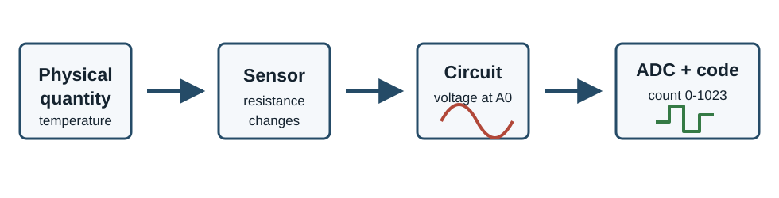
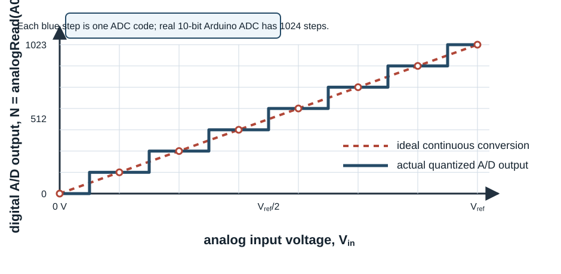
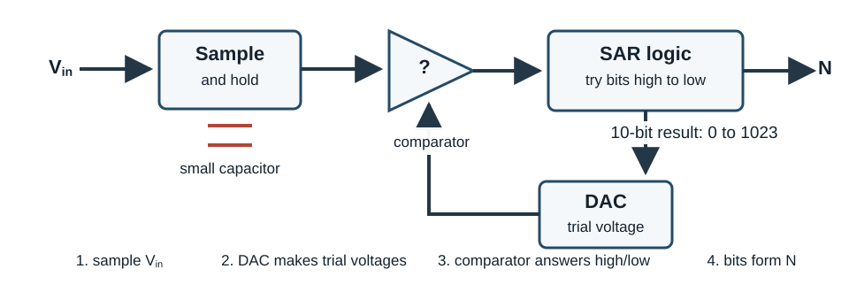
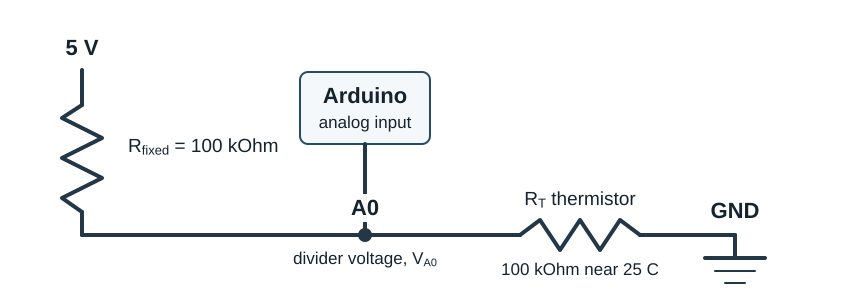
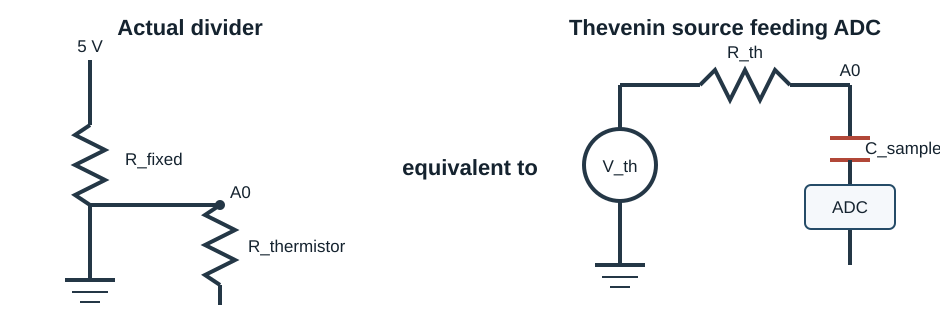
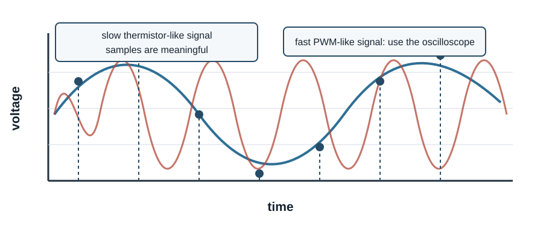
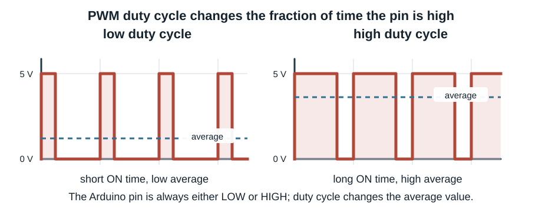
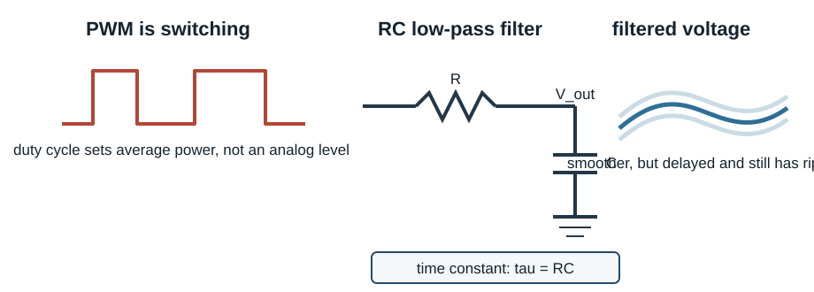

Analog-To-Digital Conversion: Measuring Real Voltages With Arduino¶
This tutorial is about the circuit physics behind analogRead(). The Arduino
ADC is useful only when the analog circuit feeding it is understood. The
important habit is the same one used throughout electronics: draw the circuit,
replace the source by an equivalent circuit when useful, estimate the error,
and then check the result with an instrument.

An Arduino analog input measures voltage relative to Arduino ground. It does not measure temperature, resistance, brightness, or knob position directly. Those physical quantities must first be converted into a voltage by a sensor circuit.
1. The ADC Model¶
For the Arduino Uno, analogRead() uses a 10-bit analog-to-digital converter.
With the usual 5 V reference, the returned number is an integer from 0 to
1023.
For \(V_{\mathrm{ref}}=5.00\ \mathrm{V}\),
The ADC output is therefore a rounded and clipped version of the input voltage.
Voltages below ground read as 0; voltages near or above the reference read as
1023; intermediate voltages are assigned to the nearest available count.

In this transfer curve, the horizontal axis is the analog input voltage
\(V_{\mathrm{in}}\). The vertical axis is the digital output number \(N\) returned
by analogRead(). The dashed line is the ideal continuous conversion. The blue
staircase is the actual A/D conversion. Each flat step is one output code; the
dashed line crosses each step at the input voltage represented by that code.
How The Arduino ADC Finds The Number¶
There are several ways to build an A/D converter. An integrating or dual-slope ADC charges an integrator for a known time, then compares against a reference while it discharges. That method is common in digital multimeters because it is accurate and rejects line-frequency noise well, but it is relatively slow.
The Arduino Uno uses a different method: a successive-approximation ADC. The ADC first samples the input voltage onto a small capacitor. Then internal logic tries the bits of the answer from most significant to least significant. For each bit, an internal DAC makes a trial voltage and a comparator asks whether the sampled input voltage is above or below that trial voltage.

For a 10-bit ADC, this binary search needs about ten comparator decisions. The
result is the integer count returned by analogRead().
A good first estimate is
where \(N\) is the ADC count. The quantization uncertainty is roughly half of one least significant bit:
For a 5 V reference, this is about \(\pm 2.4\ \mathrm{mV}\) before considering noise, reference error, source impedance, or calibration error.
2. Voltage Dividers Are Thevenin Sources¶
Many sensors are read using a voltage divider. A thermistor divider is one example:

The open-circuit divider voltage is
The ADC input is connected to the divider midpoint. The divider midpoint is not an ideal voltage source, because the voltage is made through resistors. The Thevenin equivalent replaces the divider by an ideal voltage source \(V_{\text{th}}\) in series with an effective source resistance \(R_{\text{th}}\).
To derive \(R_{\text{th}}\), turn off the ideal 5 V source. An ideal voltage source set to zero volts becomes a short circuit to ground. Then, looking back into the circuit from A0, there are two paths to ground:
and
If a small test voltage \(v\) is applied at A0, the current drawn from that test source is
Therefore
or

This matters because the ADC input includes a small sample-and-hold capacitor. During a conversion, that capacitor must charge through the source resistance. If the divider resistance is too large, the capacitor may not settle to the true input voltage before the ADC records the sample.
A practical rule is: do not make the divider impedance unnecessarily large. If the measurement is noisy, check wiring and grounding first; if the reading is slow or history-dependent, source impedance and ADC settling may be involved.
3. Potentiometer Example¶
A potentiometer connected between 5 V and GND makes an adjustable divider.
5 V ----/\/\/\/\/\/---- GND
|
A0
The wiper voltage changes continuously as the knob turns. The ADC reports this continuous motion as a sequence of integer counts.
const int analogPin = A0;
const float Vref = 5.0;
void setup() {
Serial.begin(9600);
}
void loop() {
int count = analogRead(analogPin);
float voltage = count * Vref / 1023.0;
Serial.print(count);
Serial.print(",");
Serial.println(voltage, 4);
delay(100);
}
The potentiometer is a good first test because the expected voltage is easy to check with a multimeter. If the multimeter and Arduino disagree, check the reference voltage, ground connection, wiring, and conversion formula.
4. Thermistor Example¶
A thermistor changes resistance with temperature. The Arduino still measures only voltage.
temperature -> thermistor resistance -> divider voltage -> ADC count -> calculated temperature
That chain gives several possible places for error:
| Stage | Possible problem | Instrument check |
|---|---|---|
| Thermistor | Wrong part, poor thermal contact, self-heating | Compare with room temperature or another thermometer |
| Divider | Wrong resistor value or swapped wiring | Measure A0 voltage with a multimeter |
| ADC | Noisy ground, unstable reference, source impedance | Compare ADC voltage to multimeter voltage |
| Calibration | Wrong beta value or formula | Check calculated resistance before temperature |
This is why it is often better to print intermediate quantities: ADC count, voltage, resistance, and temperature. If the temperature is wrong but the voltage is right, the bug is after the ADC conversion.
5. Sampling And Aliasing¶
The ADC samples the voltage at discrete times. It does not know what happened between samples.

For a slowly changing thermistor, sampling every 0.1 s may be fine. For a PWM waveform, casual ADC samples are misleading because the waveform is switching between low and high states. Use the oscilloscope for PWM frequency, duty cycle, high voltage, low voltage, and edge timing.
6. Noise, Averaging, And Bandwidth¶
Averaging reduces random noise, but it also reduces bandwidth. It is a digital low-pass filter.
const int analogPin = A0;
const int nSamples = 1000;
const float Vref = 5.0;
void setup() {
Serial.begin(9600);
}
void loop() {
long total = 0;
for (int i = 0; i < nSamples; i++) {
total += analogRead(analogPin);
}
float averageCount = total / float(nSamples);
float averageVoltage = averageCount * Vref / 1023.0;
Serial.print(averageCount, 1);
Serial.print(",");
Serial.println(averageVoltage, 4);
}
If the noise is random and uncorrelated from sample to sample, averaging \(M\) samples reduces the random component by about
But averaging cannot repair a bad ground, a loose breadboard connection, a wrong resistor, or a drifting reference voltage. It also makes real changes appear later.
7. RC Filtering And PWM¶
A PWM output is not an analog voltage. It is a digital waveform whose duty cycle can be varied.

An RC low-pass filter can turn PWM into an approximate average voltage, but only if the RC time constant is long compared with the PWM period and short compared with the signal changes you care about.
The design tradeoff is unavoidable:
- larger \(RC\): smoother voltage, slower response
- smaller \(RC\): faster response, more ripple

8. Practical Measurement Checklist¶
Before trusting an ADC number, check these things:
- Is Arduino ground connected to the circuit ground?
- Is the input voltage between 0 V and \(V_{\mathrm{ref}}\)?
- What is the actual value of \(V_{\mathrm{ref}}\)?
- What is the source resistance feeding the ADC input?
- Does a multimeter agree with the calculated ADC voltage?
- Is the signal slow enough for the chosen sampling rate?
- Is averaging hiding real dynamics?
- Should this signal be measured with the oscilloscope instead?
9. Lab Questions¶
- With a potentiometer, measure the ADC count near 0 V, 2.5 V, and 5 V. Does the count agree with the multimeter voltage?
- Estimate the voltage represented by one ADC count. Can you observe a one-count change reliably?
- Build or inspect a thermistor divider. What is \(R_{\mathrm{th}}\) near room temperature?
- Increase the averaging length. What improves, and what gets worse?
- Look at a PWM output with the oscilloscope. Why is
analogRead()not the right way to characterize that waveform?